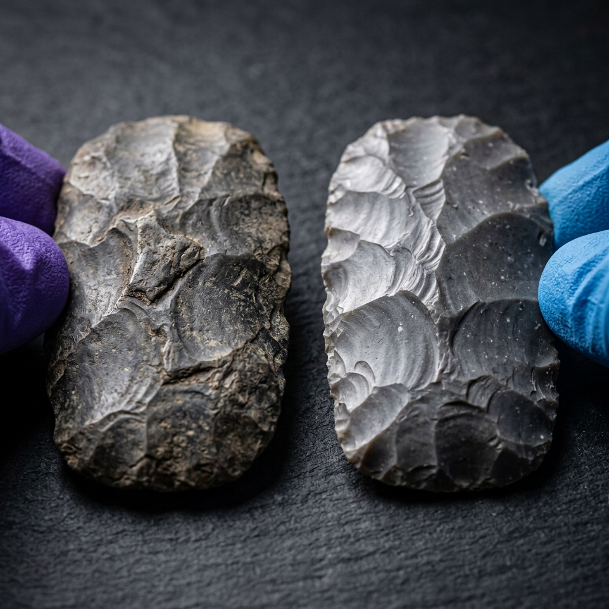
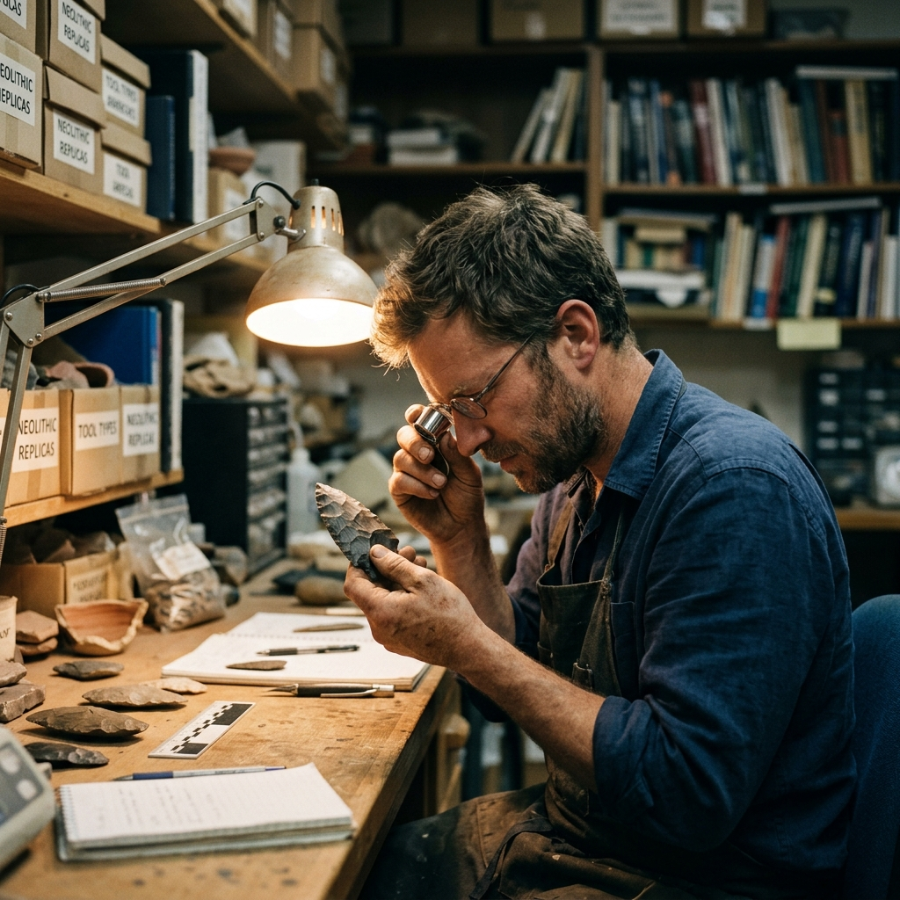
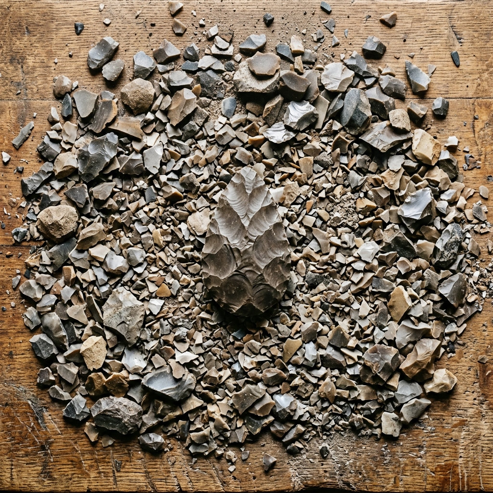

Project Context
§ 01The Challenge / Hypothesis
For most of human history, the tools people made were the only record they left behind. But how do we know how those tools were made, how they were used, or what cognitive demands the process required? Traditional archaeology studies the artifact after the fact. Eren's lab asks a different question: what if we rebuilt the past from scratch?
The Solution / Innovation
Metin Eren runs one of the only experimental archaeology labs in the world dedicated to recreating ancient stone tools through actual knapping — striking flint, chert, and obsidian with period-accurate techniques to produce functional replicas. His lab systematically destroys raw material to understand how humans across 3 million years of evolution learned to control stone. The process reveals not just how tools were made, but what it says about human cognition, learning, and cultural transmission. And remarkably, this is happening in Kent, Ohio — ground zero for understanding the deep human story.
Scientific Workflow
§ 02Raw Material Selection
Period-accurate stone sourced from geological sites. Different flint types produce different knapping qualities. Understanding the material is step one.
Controlled Knapping Sessions
Researchers and students replicate ancient techniques in the lab, producing tools while documenting the process. Stone chips (debitage) accumulate — the exhaust of human invention.
Use-Wear and Edge Analysis
Finished tools are examined under microscopes for use-wear patterns — microscopic damage from cutting, scraping, and drilling that reveals how the original tools functioned.
Comparative Analysis
Lab-produced replicas compared against actual archaeological specimens from excavations. The two sit side by side — 2,000-year-old tools and ones made last Tuesday.
---
Shot Concepts
§ 03Eren at his workstation mid-knap, stone in hand, chips visible mid-air or scattered around him. This is the image that says "a man who builds to understand." His hands are the story — scarred from years of contact with stone edges. Direct or 3/4 gaze. The lab fills the background.
- Use a fast shutter to freeze stone chips if mid-action (1/500+)
- Alternatively: slower shutter for motion blur on the striking hand (1/30)
- Warm key light from camera-left to contrast the cold stone
- Have a cleared workbench with debitage arranged naturally, not staged-clean
- Vertical and horizontal versions — leave negative space for headline
Technical Notes
Setup Diagram
softbox rim
(camera-left) (behind)
[Eren]
/knapping
/ workbench
camera

AI Visualization Prompt
A side-by-side layout: an actual 2,000-year-old archaeological stone tool next to a lab-produced replica made that week. Gloved hands in frame to anchor the scale. Shot on a neutral surface with strong directional light that reveals the surface texture of both pieces. The simplest possible image that carries the entire premise of the lab.
- Shoot on a matte black or natural stone surface — avoid white seamless
- Side lighting (small hard light source) to rake the surface and reveal flake scars and edge geometry on both tools
- Include gloved or bare hands for scale — this is a human story
- Can be horizontal (editorial layout) or square (web/social)
- Focus stacking may be needed for full sharpness across both tools
Technical Notes
Setup Diagram
hard sidelight
(45 degrees)
|
|
[ancient tool] [replica tool]
gloved hand for scale
camera overhead
or slight angle

AI Visualization Prompt
Eren examining a finished replica or an actual artifact under a handheld loupe or at a microscope, fully absorbed. The expression of expert scrutiny — the moment when the tool tells him something. Profile or 3/4, face partially lit by the microscope screen or a positioned work light.
- Shoot during actual examination, not staged
- Tight focal length (85–135mm) to compress the space between face and tool
- The light from the microscope or loupe can function as a practical key
- This is a quiet, contemplative image — don't interrupt for eye contact
- Works as a companion to the hero knapping shot in editorial layout
Technical Notes
Setup Diagram
[microscope / loupe]
practical light spill
on face
[Eren]
3/4 profile
absorbed
camera 85–135mm

AI Visualization Prompt
Top-down overhead shot of the workbench after a knapping session: hundreds of stone chips and flakes arranged as they fell — the exhaust of reconstruction. No human subject needed. This is a map of effort. Strong graphic pattern, strong top-down light. The sheer quantity of chips tells the story of iteration.
- Shoot directly overhead on a tripod
- Sweep the bench slightly to create a clean edge on one side — not lab-tidy
- Use a single overhead LED panel or flash overhead for flat even light
- Optionally: one finished tool placed among the chips — the goal amid the work
- This pairs with any portrait concept as a layout break or section image
Technical Notes
Setup Diagram
camera
overhead
|
|
[workbench]
[ chips / debitage scattered ]
[ single finished tool at center ]
